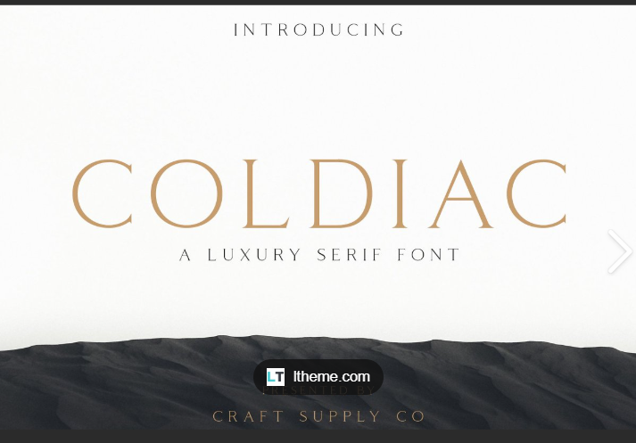
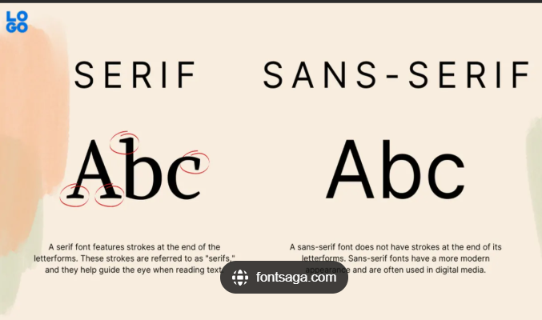

Week 6 - Blog Post
24 March, 2025
Goal and Aesthetics
I Invision a design that is clean, minimalistic, neutral and strives for professionalism. These elements should attract users to engage with the website and emphasize readability and usability.
Visual Design Elements
-Grid-based layout
-Use of space
-Layout should not be overwhelming
-Clear navigation
-Colours should complement each other
-Hover effects and animations
-Colour Swatches
Primary Colour: White (Hex code: #ffffff) for backgrounds & sections color-image.png Accent Colour: Light Gray (Hex Code: #D3D3D3 ) for links OIP.jpeg Text Colour: Dark Charcoal (Hex Code: #333333) for readability color-image (1).png Secondary Colour: Beige (Hex Code: #F5F5DC) color-image (2).png
Font Samples:
Heading Font: Colidiac (For Elegance and Neatness)
Body Font: Serif (For Readability)

Wireframes:
HomePage

BlogPage

EssayPage

ContactPage

Interaction Points
-Animated Buttons
-Read more options for blog posts & Essays
-Next/Back options for pages
-Contact button
-Clickable cards for detailed descriptions
UserFlow
 ← Back to Blog
← Back to Blog